En bjælke forsvinder ind i muren. En køkkentrappe bliver til et rum. Hvad skal man kigge efter for at forstå det hus, der står foran én? Følg et københavnsk hjørnehus fra 1896 fra gaden og ind bag panelerne, helt op til den sidste trappe under åben himmel.
Det hus, der drejer om hjørnet
Gå så langt tilbage på fortovet, at du kan se rundt om hjørnet. Over de lyse, nederste etager hænger den røde teglfacade næsten som et tæppe. De vandrette bånd fortsætter rundt om knækket. Holder du en finger op foran det smalle, skrå fag på hjørnet, falder bygningen et øjeblik fra hinanden i to gader. Fjern fingeren, og det er igen ét hus.
Ryesgade 30 A–C på Indre Nørrebro blev opført i 1896. Før renoveringen havde det seks etager, med uopvarmet kælder og loft oveni. På tavlen kan du tælle de seks niveauer i vinduesrækkerne. På det gamle fotografi i slutrapportens figur 2 kan du genfinde dem på selve huset. Et stykke mur, der skifter farve, kan samle to etager til én stor flade for øjet. Vinduerne gør tællingen lettere.
I slutrapportens figur 4 er huset fotograferet efter renoveringen. Find det samme hjørne og følg gesimsen, det vandrette fremspring, mod himlen. De murede etager ender stadig ved gesimsen. Bag den rejser taget sig nu om boliger, hvor der tidligere var loft.
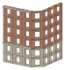
Et udsnit af de to gadefronter. Modellen viser de seks niveauer og det skrå hjørnefag. Antal vinduesfag og båndenes profil er forenklet.
Nu har du set, hvordan huset drejer. Men hvor kommer man ind? På slutrapportens etageplan, figur 3, har Ryesgade 30 tre hovedopgange, hver med sit lille bogstav ved gadedøren. B ligger ved knækket. Fra A løber huset hen mod B langs den ene gade. Fra C fortsætter det langs den anden. Bag C vender en kort sidefløj ind mod gården. Det er dér, vi skal hen.
Læg mærke til, hvor lidt gadefotografiet fortæller om det sidste stykke. På planen kan du følge det med en finger. Den smalle fløj har værelser på den ene side af en mur, som udefra næsten bare kan ligne enden på en husrække.
Før arbejdet rummede A tolv boliger, B og C hver ti. Tallet 32 kan være praktisk i en ejendomsbeskrivelse. På en besigtigelse har du mere glæde af bogstavet C. Det skelner mellem tre døre, som senere i huset viser sig at føre til ganske forskellige tekniske løsninger.
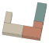
Planen som tre enkle masser. Den lyse del er opgang C med sidefløjen, den teglrøde del er hjørnet B, den grønne del er A. Se lejlighedernes indretning på originalplanen.
Et hus af mursten kan se lige tykt ud overalt. Indenfor er det sværere at tro: Under vinduet ligger der en niche, mens murstykket ved siden af rager længere ind i stuen. Forestil dig hånden, der glider hen ad væggen og pludselig må rundt om et hjørne for at nå hen til glasset.
I prøvelejligheden 30 C, første sal til venstre, blev de massive stykker mellem vinduerne beskrevet som to og en halv sten tykke. Under vinduerne, i brystningerne, var muren én sten. Det er to forskellige steder inden for samme fag. Står du med en målestok ved det ene, har du stadig noget til gode at undersøge ved det andet.
Vend siden mod lyset og følg omridset af nichen. Karmen sidder et tredje sted i dybden. Brystning, murpille og karm kan alle komme med på ét lille vandret og ét lodret snit. På en almindelig facadetegning ligger de næsten oven i hinanden.
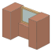
Udsnit set fra værelset. Vinduesbrystningen træder tilbage mellem de to murpiller. Murdybdernes indbyrdes forhold følger beskrivelsen på første sal. Karmens mål og placering er illustrative.
Stå ved de to vinduer i stuen mod gaden. Drej dig så fra glasset og se ind i boligen. Tegningen af første sal viser en treværelses lejlighed, der strækker sig fra gaden ind i sidefløjen. De to stuer ligger en suite. Det lille udtryk betyder, at man kan gå direkte fra den ene stue til den anden. Det tredje værelse ligger længere inde.
På afstand var det let at læse ordet »sidefløj« som et stykke murværk. Inde i boligen får det en anden betydning. Det er dét stykke hus, som giver plads til endnu et værelse og et vindue mod en anden del af byen. På planen i prøvelejlighedens rapport, figur 1, kan du også finde køkkenet, badet og den lille fordelingsgang. Følg døråbningerne helt rundt, før du tegner en pil for den vej, beboeren går.
Vores tavle beholder kun rækkefølgen af værelserne. Det er en første skitse, man kan lave på stedet. Bagefter kan man tegne de præcise åbninger ind på en opmåling.
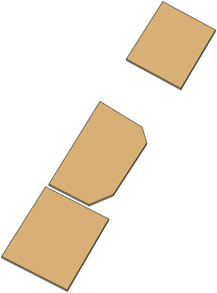
Rumfølgen tegnet som en rummelig skitse. Åbningerne forklarer passagen grafisk. Se originalens etageplan for deres faktiske placering og for boligens øvrige rum.
På afstand kan to vinduer ligne hinanden ned til den sidste sprosse. Fra vindueskarmen er det let at stille et spørgsmål, som facadetegningen har svært ved at besvare. Hvor mange greb skal man tage i for at få hele vinduet åbnet?
I prøvelejligheden prøvede man flere løsninger. Ét gadevindue beholdt sin gamle yderramme og fik et enkelt energiglas i en særskilt forsatsramme på indersiden. Ved et andet forsøg mod gården fik et nyt vindue koblede rammer: ét lag glas yderst, en tolags energirude inderst. Med begge vinduer lukket kunne man have nøjedes med at tælle glas. Når man åbner dem, bliver forskellen mellem rammerne tydelig.
Beboerne havde også en målestok. En indadgående forsatsramme kræver plads foran vinduet. Deres betænkelighed ved den løsning hører med til fortællingen om, hvordan prøvelejligheden blev brugt. En potteplante i vejen kan gøre en ellers fin tegning ganske upraktisk.
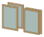
Til venstre står forsatsrammen adskilt fra yderrammen. Til højre er de to rammer tæt koblet. Tavlen sammenholder rammens bevægelse og antallet af glas. Beslag og sprosser er udeladt.
Bliv ved vinduet og læg en hånd på træet i siden af åbningen. Det hedder lysningen. Den lille flade vender ind mod vinduet og fanger dagslyset på en anden måde end væggen i stuen. På en tegning kan den være så smal, at den næsten forsvinder i blyantstregen. Men der var plads til at undersøge en hel lagfølge her.
I prøvelejligheden blev forskellige løsninger prøvet ved forskellige vinduer. Ved ét målte man bag træpanelet i en lysning uden ekstra isolering. Ved andre blev der anbragt følere både tæt ved panelet og ved muren bag den nye isolering. To prikker med få centimeters mellemrum kunne derfor fortælle om to forskellige flader.
Hvis du skulle vise en kollega placeringen, ville »inde ved vinduet« være en skrøbelig anvisning. Tegn i stedet karmen og den mur, den sidder i. Sæt så prikken på den valgte side af panelet eller isoleringen. Nu kan en anden læse præcis hvilket sted, du mener.
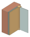
Fra venstre ses mur, et tyndt grønt isoleringslag, træpanel og karm med glas. Tavlen vender siden af lysningen ud mod læseren. Sammenlign grænsefladerne med målepunkterne på originalens figur 18.
Gulvet i prøvelejligheden var lagt med brædder. Deres oversider kunne man gå på, og langs væggen løb det høje fodpanel. Men den del af gulvet, som vakte særlig interesse, lå et lille stykke på den anden side af den færdige vægflade. Det var enden af træbjælken inde i muren.
Da måleudstyret blev monteret, blev der boret ned i bjælkeenderne. Senderne kunne ligge under gulvbrædderne. Dermed kunne holderen af en måleserie senere vende tilbage til det samme skjulte sted, uden at nogen hver gang skulle løfte gulvet for at se efter. På forsøgets figur 16 kan du finde to målinger ved den isolerede gavlvæg og et referencepunkt ved soveværelset.
Forestil dig at gøre arbejdet baglæns. Begynd med en kurve på papir, find målepunktet på planen og slut ude ved gavlen. Først efter den lille vandring bliver kurven knyttet til et bestemt stykke tømmer i et bestemt hus.
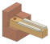
Det omkringliggende murværk er åbnet på tavlen, så bjælkens leje bliver synligt. Den lille okkerfarvede markør angiver måling i bjælkeenden. Instrumentets form og mål er ikke gengivet.
Nu ved vi, hvor ét af de skjulte stykker træ lå. Gå ned på gaden igen. På vores tavle kan du se niveauspringet mellem husene. På fotografiet i forsøgets figur 25 står porten ved nabohuset midt i billedet. Lige til højre over åbningen lå prøvelejligheden. På første sal kunne en måler sidde tæt ved det fri og samtidig være godt hjulpet af nabobygningen.
Det var vigtigt, da resultaterne skulle læses. Prøvestedet lå lavt i en nordøstvendt gavl. Den nærliggende bygning gav en vis afskærmning mod både sol og slagregn. En høj facade, der tager vinden på skrå, kan få en ganske anden omgang regn. Også selv om en murer har lagt lige mange sten foran træet begge steder.
På den lille skitse i notesbogen er der derfor god grund til at tegne huset på den anden side af mellemrummet med. Gør det til en enkel klods, der giver en fornemmelse af højden. Så kan man senere forstå, hvorfor netop denne bjælkeende blev vurderet i ly af sin nabo.
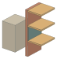
Lys bygningsmasse til venstre, gavl og etageudsnit til højre. Grønt viser første sal ved prøvestedet. Mellemrum og højder er principielle. Fotografiet i figur 25 viser den faktiske port.
For at følge bjælkeenderne på første sal måtte forsøget også omfatte en væg nedenunder. Ellers kunne varmen fra stuelejemålet nå op til træet og gøre det svært at forstå, hvad isoleringen havde ændret. På det punkt fik én lejlighed forsøget til at vokse ud over sine egne fire vægge.
I stueetagens væg dukkede en spareniche op. Her havde man oprindeligt ladet en fordybning stå for at spare mursten. Prøv at tegne væggen som ét glat, massivt stykke. Det ser overbevisende ud, lige indtil beklædningen kommer af, og den gamle mur fortæller noget andet.
På de to arbejdsfotos i forsøgets figur 7 står feltet åbent og er siden blevet lukket. Nichen blev udfyldt med isolering i et skelet af stålprofiler og lukket med en plade, før den indvendige isolering kom på. I den færdige stue kan væggen atter læses som en flade. Under arbejdet kunne man i en kort periode læse hele dens historie.
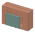
Udsnit af mur med den gamle fordybning. Den grønne del er trukket ud for at gøre pladsen bag beklædningen synlig. Se stålprofiler og plade på originalfotografierne.
På slutrapportens fotografi i figur 23 er der køkkenbord og skabe langs væggene. Dagslyset kommer ind fra siden. Hvis man kom ind med en pose brød og ledte efter en plads at lægge den fra sig, ville man næppe tænke på, at andre engang har gået fra etage til etage gennem det samme stykke hus.
I to af opgangene tog man køkkentrappen i brug som boligareal. Det gjorde køkkenerne større. Ændringen rakte samtidig ud gennem lejlighedsdøren, for det fælles hovedtrapperum fik sprinkleranlæg som led i projektet. Før man kunne lægge bordpladen på, måtte nogen kunne holde den enkelte bolig og hele opgangen i hovedet på én gang.
Prøv at tegne den samme kvadratmeter to gange. På den gamle tegning skal en blyant kunne følge trin op til næste etage. På den nye skal man kunne sætte begge fødder på samme gulv og stille et skab ved væggen. Læg de to små tegninger oven på hinanden. Først nu kan du se det rum, køkkenfotografiet har lukket sig om.
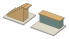
Trappeløb og repos til venstre, sammenhængende gulv med køkkenbord til højre. To principskitser af stedets brug. Udformningen af det oprindelige løb er fri.
Køkkenlågen på billedet i slutrapportens figur 6 står åben. Bag den fylder en metalboks det meste af pladsen, og rørtilslutningerne fortsætter ovenud. Dér finder man noget af svaret på, hvordan huset får frisk luft efter renoveringen. Men svaret gælder kun, hvis man også husker opgangens bogstav.
I A og B blev anlæggene samlet i kælderen. I C fik hver bolig sit eget aggregat, skjult i et skab i køkken eller mellemgang. Friskluften blev taget ind gennem facaden. Luften ud af boligen havde endda forskellige veje i samme opgang. På højre side blev den ført op over taget, på venstre side til den vinduesløse gavl.
Har du kun tegnet skabet, ender alle spor ved en køkkenlåge. Føj ydervæg og tag til skitsen, og prøv at følge ét rum hele vejen ud til det fri. Så får du også et bedre spørgsmål til driftspersonen: Hvilken dør skal vi åbne, hvis lige netop denne bolig får problemer?
Den grønne boks er et lokalt aggregat i et skab. De fire korte tilslutninger er vist uden kanalforløb. Figur 6 viser den virkelige installation. Projektrapporten beskriver vejen videre ud af huset.
Tænk på et skridt hen over stueetagens gulv. Set fra kælderen har den samme bevægelse retning hen over loftet. Det er en enkel vending, men den gør en forskel, når man skal forklare en kollega, hvilken side af et gammelt hus arbejdet blev udført fra.
Kælderen på Ryesgade var oprindeligt uopvarmet. Ved renoveringen lagde man mineraluld under kælderloftet. På et snit kan den nye stribe let forveksles med noget, der er lagt lige under stuens gulvbrædder. Prøv derfor at tegne et lille menneske i hvert rum. Den ene person har den nye stribe over hovedet, den anden har hele etageadskillelsen mellem sig og isoleringen.
I A og B findes der også ventilationsudstyr på dette niveau. For at læse kælderen må man derfor både kunne følge en vandret flade hen under stuen og en lodret forbindelse op gennem huset. Et fotografi af et rør eller et stykke isolering er lettere at bruge, når det ledsages af en lille tegning, der viser, hvad der ligger ovenover.
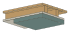
Et udsnit set nedenfra. Den grønne mineraluld slutter i en fri snitkant, så man kan se dens plads under loftet. De øvrige lag viser princippet med en etage over kælderen. De er ikke en opmåling af dette kælderloft.
Vi begyndte på fortovet med øjnene lige under gesimsen. Nu står vi i tankerne inde i det, som siden kom til over den. På fotografiet i slutrapportens figur 25 ligger køkken og spiseplads i det samme åbne rum. Ude til højre starter en trappe. Hvor fører den hen? Et billede taget inde i et andet menneskes stue plejer kun at give det halve svar.
På gårdfotografiet i slutrapportens figur 24 kan man se huset fra den anden side. Højt oppe ligger terrasserne. Den trappe, som fra spisebordet ligner et stykke møbel ved væggen, forbinder netop denne bolig med dens private tagterrasse. Den samme lille rute kan tegnes på et snit ved at sætte blyanten på køkkengulvet, følge trinene og standse der, hvor man igen kommer under åben himmel.
Dengang huset havde uopvarmet loft, sluttede boligernes verden et andet sted. Et tag kan derfor være mere end en ny hældning på en facade. Her har det givet beboerne en anden vej ud i byen, denne gang opad.
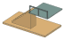
Spisegulv, indvendigt trappeløb og en terrasse på næste niveau. Tavlen viser forbindelsen i princippet. Fotografierne fra gården og fra boligen fortæller om det samme niveauspring.
Hvis vi nu stod på fortovet med kun én blyantstreg tilbage, hvor skulle den så sættes? I forsøget var det nærliggende at vende tilbage til bjælken på første sal. Man kendte stedet og kunne gentage målingen dér. Men det lave, beskyttede punkt kunne aldrig alene fortælle, hvordan huset havde det højt oppe mod vinden.
I næste del af projektet fulgte man også temperatur og relativ luftfugtighed i opgang B. Denne gang sad punkterne ved den sydvestvendte facade på fjerde og femte sal. På slutrapportens figur 8 kan man se, hvilken del af væggen og bjælken der hører til hvert tal. At skrive et bogstav, en etage og en verdensretning ved sin prik er en lille umage. Det er den umage, der gør det muligt at vende tilbage til præcis samme sted.
Tegn nu den første plan til en forandring af huset på kalkerpapir over det, du har lært. I søsterbindet Byg videre på huset åbner tre tænkte prøveplaner forskellige muligheder. Det undersøgte hus nedenunder giver dig noget at prøve hver streg imod.
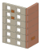
Den lave markør ved gavlen henviser til prøven i C. De to høje markører henviser til senere undersøgelser i B. Husudsnittet samler placeringerne i én sammenligning. På de originale planer kan de findes hver for sig.